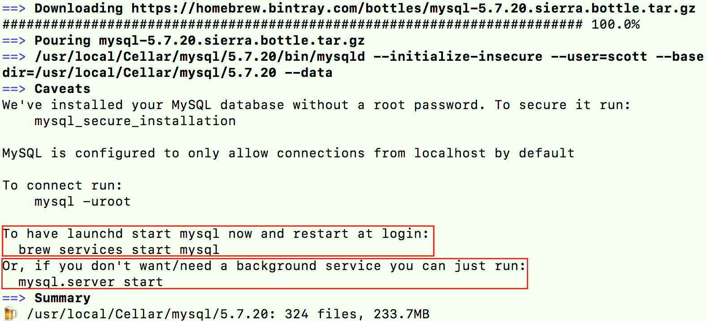

一. 概述
- Homebrew（简称brew）是macOS中的软件管理工具，可以方便地安装、更新、卸载软件，类似Ubuntu系统中的apt-get；
- macOS默认安装了Python、Ruby、Perl、Apache/PHP等开发程序，但是版本比较旧；若直接使用新版本替换系统的旧版本，会引发一些问题，Homebrew可以很好地将其安装的开发工具与系统默认的隔离开来；
二、安装、卸载
- brew是基于Ruby运行的工具，必须先安装Ruby；
在终端中执行以下指令（可在
https://brew.sh/页面中获取）即可自动安装，路径为/usr/local/Homebrew/，其中/usr/local/Homebrew/Library/是brew系统的自身目录；/usr/bin/ruby -e "$(curl -fsSL https://raw.githubusercontent.com/Homebrew/install/master/install)"- brew会创建/usr/local/Cellar/目录，用于存放通过其安装的程序，文件夹结构为“程序名/版本号”；
- /usr/local/bin/目录存放程序的启动链接（相当于快捷方式）；brew也会在此创建通过其安装的程序的启动链接
- brew安装的程序的配置文件默认存放在/usr/local/etc/目录中；
在终端中执行以下指令（可在
https://docs.brew.sh/FAQ.html页面中获取）即可自动卸载；ruby -e "$(curl -fsSL https://raw.githubusercontent.com/Homebrew/install/master/uninstall)"
三、brew常用命令
可以使用
brew doctor命令检测操作brew（安装、卸载程序等）后是否有什么问题；比如，若报以下警告，按照提示进行解决，之后再执行source .bash_profile；

执行
brew install之后，要注意终端输出日志，从而采取操作的操作（caveats: 警告、附加说明）；

brew -h | --help # 查看brew帮助（使用--时，命令要写全） brew -v | --version # 查看brew当前的版本 brew update # 更新brew brew list # 查看通过brew安装的程序 brew outdated # 查看哪些程序可以更新 brew search <NAME> # 搜索某个程序，例如brew search wget；NAME支持正则表达式，例如brew search /wge*/ brew install <NAME> # 安装某个程序，例如brew install wget brew uninstall | remove <NAME> # 卸载某个程序（不会卸载相关包依赖），例如brew uninstall wget brew upgrade [NAME] # 更新所有程序（或某个程序） brew info <NAME> # 查看某个程序的相关信息（如安装之后需要配置信息） brew deps <NAME> # 查看某个程序的包依赖 brew home [NAME] # 使用浏览器打开brew（或某个程序）的主页对于通过Homebrew安装的services（如mysql等），可以使用
brew services相关命令进行管理；brew services list # 查看所有services的状态 brew services cleanup # 清除所有无用的services brew services run <NAME> # 启动某个services brew services start <NAME> # 启动某个services，并将设置开机自启动 brew services stop <NAME> # 关闭某个services，并将取消开机自启动 brew services restart <NAME> # 重启某个services，并将设置开机自启动
四、Homebrew-cask
- Homebrew-cask是Homebrew的一个扩展，用于安装图形界面程序（例如Chrome、QQMusic等），其命令为
brew cask ...； - brew用于安装不带界面的命令行工具，brew cask用于安装带界面的应用软件；
- Homebrew-cask有两个安装索引源，一个是稳定版本
https://github.com/phinze/homebrew-cask，一个是开发版本https://github.com/caskroom/homebrew-versions；安装了Homebrew即可直接使用Homebrew-cask稳定版本的索引源； Homebrew-cask和Homebrew的搜索、安装、卸载、更新等操作是独立的；
brew cask list # 查看通过Homebrew-cask安装的程序 brew cask search <NAME> # 搜索某个程序，例如brew cask search qqmusic brew cask install <NAME> # 安装某个程序（路径为/Applications目录），例如brew cask install qqmusic brew cask uninstall | remove <NAME> # 卸载某个程序，例如brew cask uninstall qqmusic ····注意：Homebrew-cask没有提供
brew cask upgrade [NAME]的命令升级程序版本，只能重新安装程序；
五、常用开发工具
5.1 MySQL
安装MySQL后，根据相关的信息配置MySQL；
brew install msysql
- 首先执行
mysql.server start或brew servers start mysql启动MySQL（关闭使用stop命令），之后才可以连接数据库（mysql -uroot）；否则会报错：Can't connect to local MySQL server through socket '/tmp/mysql.sock' (2)； - MySQL默认没有设置密码；若需要设置密码，执行
mysql_secure_installation，此时会提醒安装“VALIDATE PASSWORD PLUGIN”，选择NO，否则无法设置简单密码，之后按照后续提示进行操作即可；
- 首先执行
MySQL的数据库文件默认存放在/usr/local/var/mysql/目录中，可执行SQL语句进行查看：
show global variables like "%datadir%";；当卸载时，若要完全删除MySQL，必须手动删除该数据库文件；
通过brew安装MySQL，卸载时通过brew卸载即可；若是手动安装，则需要手动卸载（命令如下）；
sudo rm /usr/local/mysql sudo rm -rf /usr/local/mysql* sudo rm -rf /Library/StartupItems/MySQLCOM sudo rm -rf /Library/PreferencePanes/My* sudo rm -rf ~/Library/PreferencePanes/My* sudo rm -rf /Library/Receipts/mysql* sudo rm -rf /Library/Receipts/MySQL* sudo rm -rf /var/db/receipts/com.mysql.* vim /etc/hostconfig (and removed the line MYSQLCOM=-YES-) sudo rm -rf /usr/local/var/mysql # 删除数据库文件
5.2 Oracle Java
注意是使用Homebrew-cask进行安装（可以执行
brew search java命令查询安装源是Homebrew，还是Homebrew-cask）；若之前手动安装过Oracle Java，需要先进行手动卸载（命令如下；参考https://docs.oracle.com/javase/9/install/installation-jdk-and-jre-macos.htm）；brew cask install java # 安装Oracle Java brew cask uninstall java # 卸载Oracle JavaUninstalling the JDK on macOS

Uninstalling the JRE on macOS

sudo rm -rf /Library/Java sudo rm -rf /Library/Internet\ Plug-Ins/JavaAppletPlugin.plugin sudo rm -rf /Library/PreferencePanes/JavaControlPanel.prefPane sudo rm -rf /Library/LaunchAgents/com.oracle.java.Java-Updater.plist sudo rm -rf /Library/LaunchDaemons/com.oracle.java.JavaUpdateHelper.plist sudo rm -rf /Library/Preferences/com.oracle.java.Helper-Tool.plist sudo rm -rf /Library/PrivilegedHelperTools/com.oracle.java.JavaUpdateHelper sudo rm /var/db/receipts/com.oracle.* ...Shell命令补充：查找匹配、删除文件
# 全盘查找带“编程”的目录（d）、普通文件（f）、链接文件（l）等文件 find / -name "*编程*" # 当前目录查找带“编程”的普通文件 find . -name "*编程*" -type f # -iname: 不区分大小写查找 find / -iname "*Abc*" # 当前目录查找带“编程”的普通文件，并删除（不带打印） find . -name "*编程*" -type f | xargs rm -rf
5.3 Tomcat
Tomcat后运行服务后，默认网址为
http://localhost:8080/；brew install tomcat # 安装tomcat catalina run # 在当前窗口中运行tomcat catalina start # 运行tomcat catalina stop # 关闭tomcat
六、管理工具
6.1 Cakebrew
- Cakebrew是一个图形化的Homebrew，通过该工具不使用brew命令就可以进行Homebrew的管理；
https://www.cakebrew.com/
6.2 LaunchRocket
- LaunchRocket可以管理通过Homebrew安装的service，查看service的运行状态；
https://github.com/jimbojsb/launchrocket - 注意：先将service关闭后，再通过LaunchRocket进行管理；